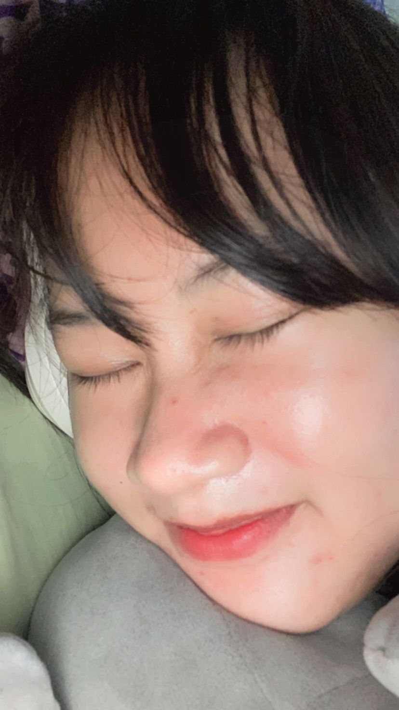
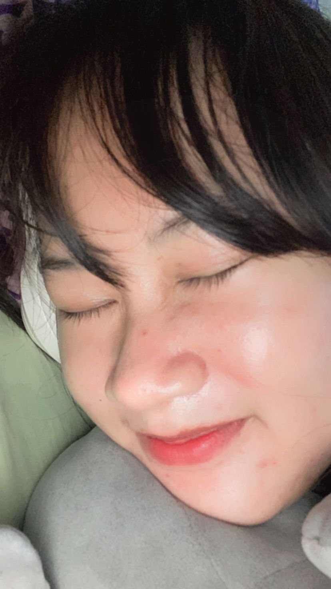

Tap the Love!


 


00:00
~Yeni Vinanti~
She's the first person who make me fall in love. She is the reason why i always smile like an idiot.
I feel so lucky with her presence. I love seeing her smile and everything about her.
Actually you make me smile over text, lol that crazy. Just know i'm the happiest i've ever been cuz u.
You're so special, babe. I hope you know that, like the universe took its time with you. üòç
You're precious, perfect, and irresistible. How can i meet people as good as you?
You know babe? Since you came my life became more colorful. Before, it was just black and white, and yes after that you came and gave a new color to my life.
I love u and every single weird thing you do more than anything.
hahaha
You succeeded in making me so afraid of losing you ü´µ
Tap here üëâüíå
Click to slide!
For my loopy,
Actually i don't want to say anything, but i just wanna say i love you so much.
I'm so grateful you came into my life and i'll forever thank god for meeting someone like you.
You make me very happy as long as we're togetherStay with me. I love uu ü§ç